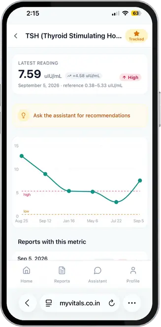

Cosmic Shaft Originals · India
MyVitals
Every lab report you have ever had, in every format, from every lab — reconciled into one continuous health history an AI can actually reason about. Built end to end by Cosmic Shaft, for ourselves first.

The problem
Anyone who has used a healthcare system for more than a few years accumulates lab reports — blood panels, thyroid panels, lipid profiles — from different labs, each with its own PDF layout and its own name for the same measurement. Fasting blood sugar becomes "FBS" in one report and "Glucose, Fasting" in another a year later, in different units, from a different lab.
The moment someone changes labs, cities, or providers, their ability to see a trend in their own health data is effectively gone. The data still exists — it is scattered across PDFs, WhatsApp forwards, photos, and lab portals nobody logs back into. The usual coping mechanism is a spreadsheet, a folder, or, most commonly, nothing.
What we built
MyVitals accepts any lab report — a PDF or a phone photo — from any lab, in any format. A multimodal AI model reads every measurement on the page: name as printed, value, unit, and the lab's own reference range. No templates, no "supported labs" list.
The part that actually matters is what happens next. Each measurement is matched against a shared, self-improving dictionary of clinical metrics and its unit normalised, so "FBS," "Fasting Blood Sugar," and "Glucose (Fasting)" all become one continuous history, chartable across years and labs. Extraction is table stakes now; reconciliation is the product.
- A prioritised dashboard, weighted by how far out of range a metric is against its own trend direction
- Per-metric charts with reference-range bands, and every contributing report linked back to the original file
- A chat assistant grounded in the user's own history, medications, and lifestyle profile — not a generic model
- A doctor-ready PDF, generated entirely in the browser, for a doctor who needs a summary and not an app
- Family sharing — one person can manage a household's records from a single login, with access re-checked on every request so it can be revoked instantly
It ships as a web app first. The Play Store app is a thin WebView shell around it, which means an ordinary product update reaches every install immediately, with no store-review cycle to wait on. That same choice shaped the reliability work: because a WebView may never register or persist a service worker, the app carries two independent offline caching layers rather than one.
Why it compounds
AI document extraction is increasingly commodity. The moat here is what it feeds: every report anyone uploads teaches the shared alias dictionary, which makes matching cheaper and more accurate for every other user, not just that one. And because history is retroactive, a new user can upload five years of old reports on day one and immediately hold a continuous record a competitor cannot hand them without the same upload effort.
Where it stands
Live on the web at myvitals.co.in and on the Play Store. It is early — a single developer's product finding its first users, not a funded business — and that is worth saying plainly rather than dressing up. It also means everything in this case study is already shipped, not a slide.
- Ingestion
- Any format
- Matching
- Gets smarter
- Delivery
- Works offline
- Households
- One login